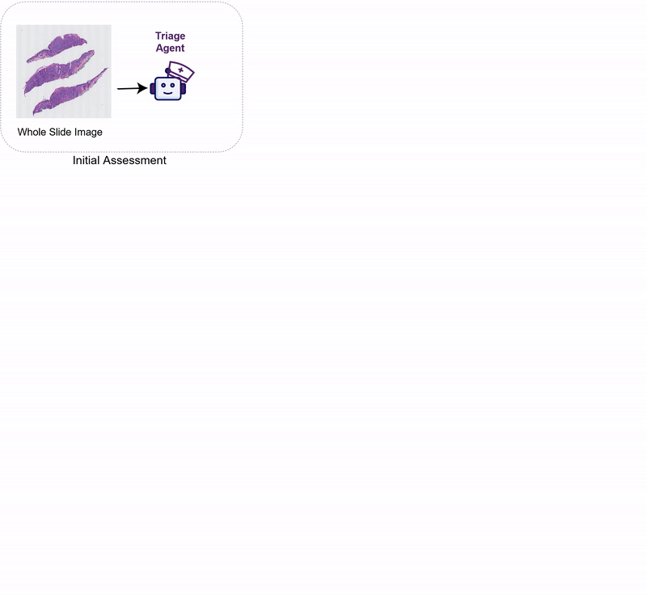
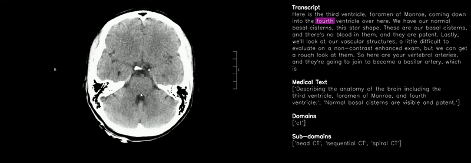
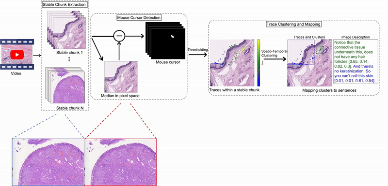
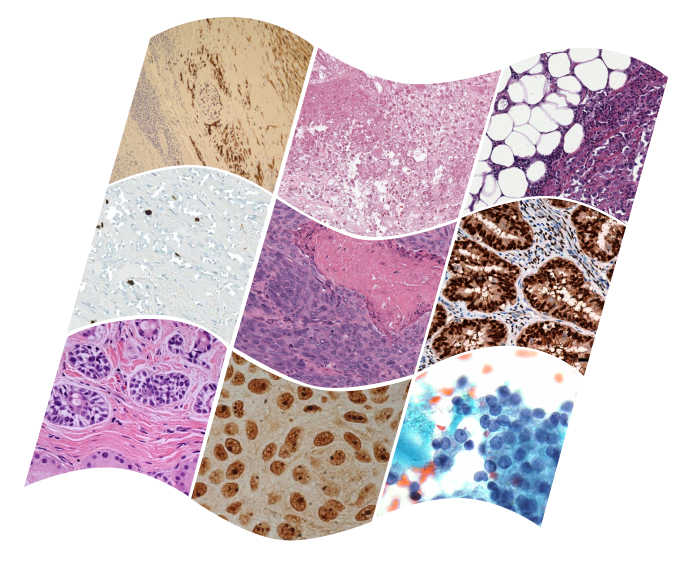
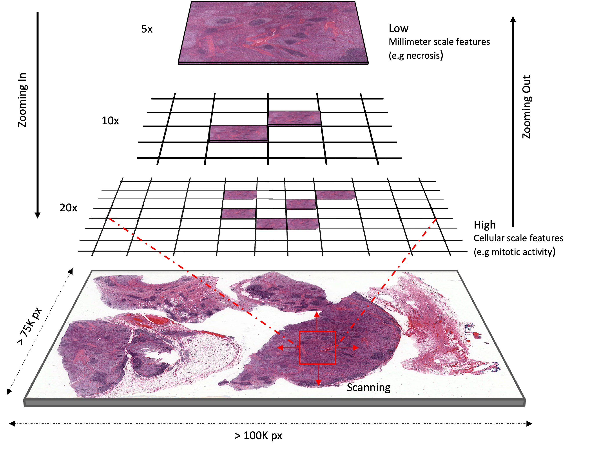
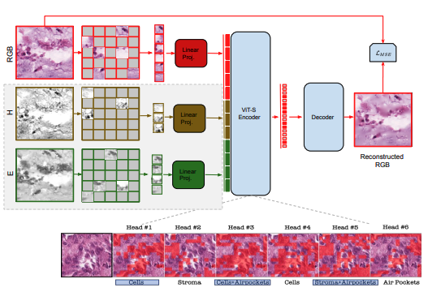
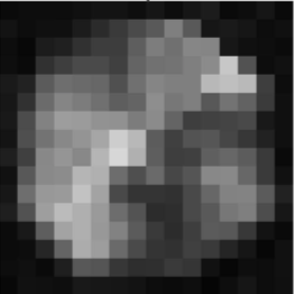

|
I am a 4th year PhD student in Computer Science & Engineering at University of Washington, where I work with Prof. Ranjay Krishna and Linda Shapiro . Previously, I received my B.Sc. from Obafemi Awolowo University, Nigeria, where I was fortunate to work with Prof. Kayode P. Ayodele. |
|
My research aims to advance multimodal representation and generative modeling through effective alignment strategies. On the data side, I study:
|
|  |
Wisdom O. Ikezogwo , Fatemeh Ghezloo , Mehmet Saygin Seyfioglu, Rustin Soraki, Beibin Li, Tejoram Vivekanandan, Joann G. Elmore, Ranjay Krishna and Linda Shapiro PrePrint 2025. PathFinder: A four-agent AI system for histopathology that outperforms both SOTA methods (+8%) and human pathologists (+9%) in melanoma diagnosis while providing explainable results through expert-like image navigation and description.Diagnosing diseases through histopathology whole slide images (WSIs) is fundamental in modern pathology but is challenged by the gigapixel scale and complexity of WSIs. PathFinder is a multi-modal, multi-agent framework that emulates the decision-making process of expert pathologists by integrating four AI agents: Triage, Navigation, Description, and Diagnosis. The Triage Agent distinguishes benign versus risky WSIs, then the Navigation and Description Agents collaboratively identify significant regions, provide importance maps, and generate natural language descriptions of relevant patches. Finally, the Diagnosis Agent synthesizes these findings into a comprehensive diagnosis. PathFinder outperforms state-of-the-art methods in skin melanoma diagnosis by 8% while offering inherent explainability, with pathologist evaluations finding that the descriptions it generates are on par with GPT-4. Remarkably, PathFinder is also the first AI system to surpass the average performance of pathologists on this task by 9%, setting a new standard for accurate and interpretable AI-assisted diagnostics in pathology. |
|  |
Wisdom O. Ikezogwo , Kevin Zhang, Mehmet Saygin Seyfioglu, Fatemeh Ghezloo , Ranjay Krishna and Linda Shapiro PrePrint 2025. MedicalNarratives: A dataset of 4.7M image-text pairs from medical videos that aligns speech with mouse movements. Trained GenMedCLIP model achieves SOTA across 12 medical domains.We propose MedicalNarratives, a dataset curated from medical pedagogical videos, inspired by Localized Narratives. It synchronizes instructors’ speech and mouse movements to create multimodal data for both semantic and dense objectives in medical AI tasks. MedicalNarratives contains 4.7M image-text pairs, with 1M having trace-level or bounding-box-level annotations. Trained with these data, our GenMedCLIP achieves state-of-the-art performance on medical imaging benchmarks spanning 12 domains, enabling integrated semantic and dense objectives without relying on separately trained models. |
|  |
Wisdom O. Ikezogwo , Mehmet Saygin Seyfioglu, Fatemeh Ghezloo , Ranjay Krishna and Linda Shapiro CVPR June 2024. Challenges in histopathology: 1) Lack of spatial grounding in image-language datasets; 2) Isolated image-text pairs from PubMed. Solution: Using YouTube content to create a visual instruction tuning dataset. Extracting mouse cursor movements for spatial awareness. Joint training of vision and text encoders yields a superior visual chatbot, surpassing state-of-the-art on histopathology benchmarks.The gigapixel scale of whole slide images (WSIs) poses a challenge for histopathology multi-modal chatbots, requiring a global WSI analysis for diagnosis, compounding evidence from different WSI patches. Current visual instruction datasets, generated through large language models, focus on creating question/answer pairs for individual image patches, which may lack diagnostic capacity on their own in histopathology, further complicated by the absence of spatial grounding in histopathology image captions. To bridge this gap, we introduce Quilt-Instruct, a large-scale dataset of 107,131 histopathology-specific instruction question/answer pairs, that is collected by leveraging educational histopathology videos from YouTube, which provides spatial localization of captions by automatically extracting narrators' cursor movements. In addition, we provide contextual reasoning by extracting diagnosis and supporting facts from the entire video content to guide the extrapolative reasoning of GPT-4. Using Quilt-Instruct, we train Quilt-LLaVA, which can reason beyond the given single image patch, enabling diagnostic reasoning and the capability of spatial awareness. To evaluate Quilt-LLaVA, we propose a comprehensive evaluation dataset created from 985 images and 1283 human-generated question-answers directly extracted from videos. We also thoroughly evaluate Quilt-LLaVA using public histopathology datasets, where Quilt-LLaVA significantly outperforms SOTA by over 10% on relative GPT-4 score and 4% and 9% on open and closed set VQA. |
|  |
Wisdom O. Ikezogwo, Mehmet Saygin Seyfioglu, Fatemeh Ghezloo, Dylan Geva, Fatwir S. Mohammed, Pavan K. Anand, Ranjay Krishna and Linda Shapiro NeurIPS (ORAL) June 2023. Recent accelerations in multi-modal applications have been made possible with the plethora of image and text data available online. However, the scarcity of similar data in the medical field, specifically in histopathology, has slowed similar progress. To enable similar representation learning for histopathology, we turn to YouTube, an untapped resource of videos, offering 1,087 hours of valuable educational histopathology videos from expert clinicians. From YouTube, we curate Quilt: a large-scale vision-language dataset consisting of 802,148 image and text pairs.Quilt was automatically curated using a mixture of models, including large language models, handcrafted algorithms, human knowledge databases, and automatic speech recognition. In comparison, the most comprehensive datasets curated for histopathology amass only around 200K samples. We combine Quilt with datasets, from other sources, including Twitter, research papers, and the internet in general, to create an even larger dataset: Quilt-1M, with 1M paired image-text samples, marking it as the largest vision-language histopathology dataset to date. We demonstrate the value of Quilt-1M by fine-tuning a pre-trained CLIP model. Our model outperforms state-of-the-art models on both zero-shot and linear probing tasks for classifying new pathology images across 13 diverse patch-level datasets of 8 different sub-pathologies and cross-modal retrieval tasks. |
|  |
Wisdom O. Ikezogwo, Christopher Chandler, Jatin S. Gandhi, Annie Garcia, Courtney Daum, Elizabeth Loggers, Linda G. Shapiro, Jose G. Mantilla, Anshu Bandhlish, Robert W. Ricciotti Abstract (Oral Platform Presentation)*, United States and Canadian Academy of Pathology (USCAP) April 2023. |
|  |
W.O. Ikezogwo, Mehmet Saygin Seyfioglu, Linda Shapiro Extended abstract: Machine Learning for Health (ML4H), Dec 2022. |
|  |
K.P. Ayodele, W.O. Ikezogwo, M.A. Komolafe, P. Ogunbona Computers in Biology and Medicine Volume 120, May 2020, 103757 We use supervised domain generalization to combine disparate EEG datasets and a recurrent convolutional neural network detector to test the generalizability of the trained model on an out-of-distribution private epilepsy seizure dataset. |
|
K.P. Ayodele, W.O. Ikezogwo, Anthony A. Osuntunyi International Journal of Online and Biomedical Engineering (iJOE) Volume 16, Dec 2020. |
News & Updates
News & Updates
Quilt-LLaVA has been accepted at CVPR 2024
February, 2024Interning at Apple in Spring & Summer of 2024
January, 2024Medical AI Renaissance Proposal Accepted for Microsoft's Accelerating Foundation Model Research Grant
October, 2023Quilt-1M has been accepted at NeurIPS 2023 (ORAL)
September, 2023Started Summer Internship at Mayo Clinic (QHS team)
June, 2023Presenting MMAE and Junior Chair at ML4H
November, 2022|
|

{kind=link}
|
|